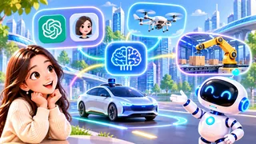
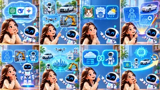

Welcome to Episode 5. Last time we met the companies and products behind famous AI names. Today we start with a simple question: where is AI, really?
You may use AI every day without seeing a body. ChatGPT, DeepSeek, and Gemini live in the digital world — you meet them through laptops and phones, not through eyes in a hallway.
Other AI is visible: robots, self-driving cars, drones, and smart arms in factories. They move, sense, and change the real world. Today we learn both forms — and we clear up a mix-up from Episode 2.
Each illustration sits beside the idea it explains. By the end you should spot whether an AI story is about pixels or about machines.
Digital world and physical world
Think of invisible AI as software you touch through glass: answers in a chat, a new image file, a draft story. Think of visible AI as AI tied to hardware that rolls, lifts, or drives.
Neither label is “better.” Homework help on a phone is invisible; a warehouse robot that sorts boxes is visible. Both count as AI.
Invisible AI
Open ChatGPT, ask a question, and it replies. Ask for a picture or a story, and new content appears. There is no metal body — only servers, networks, and the device in your hands.
That is why we call it AI in the digital world: you interact through keyboards, microphones, and touchscreens. The “brain” runs far away in a data center.
You might not see the math, but you see the result — text, audio, or pixels. Episode 1 already warned: checking answers still matters here.
DeepSeek, Gemini, and 豆包 fit the same pattern: products on a screen, models you never physically touch.
Visible AI
Now switch to machines you could point at in a room. They sense, decide, and act — wheels turn, arms move, cars slow down.

A robot can use cameras to find objects and choose a path. A self-driving car fuses sensors to track lanes, cars, and pedestrians. A factory arm can pick a part and place it on an assembly line.
What they share: they process information and change the physical world. That is visible AI — intelligence with a body in space.
Episode 2’s smart-car example was visible AI at work, even when the code inside looks invisible on a diagram.
Not the same as traditional vs generative
Episode 2 introduced traditional AI and generative AI. This section goes deeper — and clears a common mistake that confuses them with invisible vs visible AI.
Mix-up: “Invisible = generative, visible = traditional.”
Seen or unseen describes where AI shows up. Traditional vs generative describes what it does — recognize and predict, or create new content.
Both traditional and generative AI can live in apps or inside robots. The labels do not line up in a simple grid.
A chatbot on your phone is invisible but might use generative models. A factory arm you can see might run traditional vision code. Two axes, not one straight line.
Remember two questions: Where is it? (screen or machine.) What job? (predict or generate.)
Traditional AI — task by task
Traditional AI is like an assistant that follows a trained job: spot cats vs dogs in photos, flag spam mail, or forecast tomorrow’s weather from patterns.
It usually does not invent a brand-new poem from scratch — it sorts, scores, or guesses what comes next from data it already studied.
That assistant can run on a server you never see, or on a chip inside a car you do see. Location and “traditional” are separate ideas.
Generative AI — new designs and content
Generative AI goes further: it can produce new text, images, plans, and sometimes whole design drafts from your instructions.
Imagine you ask AI to design a robot that carries boxes. Generative tools might propose shapes, render a look, and sketch structure. Engineers refine the plan; factories and arms build the real machine.
The same chain can touch cars, drones, and factory lines: think on a screen, then act in the world. That is invisible and visible AI working as a chain, not as opposites.
None of that happens alone — computers, sensors, mechanical tools, and human engineers still matter at every step.
Looking ahead

We are likely to see more pairs: AI that drafts a robot, plus robots that run the task; AI that helps design a car, plus smart driving on the road; AI that plans a factory line, plus arms that build smarter.
One side thinks, analyzes, and generates options; the other side moves, lifts, and delivers in real space. They will link more tightly over time.
The world of AI is bigger than any one chat window or any one robot arm — you now have words for both.
Coming up next
Quick recap: invisible AI mainly serves you through digital devices; visible AI acts through robots, vehicles, and machines. Traditional AI handles recognition, judgment, and prediction; generative AI can also create new content and designs.
Next episode we ask whether AI has already entered daily life—from face unlock to feeds—and we close Phase 1 before the concept map in Episode 7. See you in Episode 6.